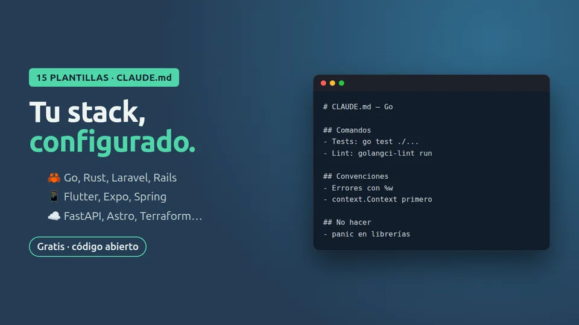

Gratis · código abierto · MIT
15 plantillas CLAUDE.md por stack
CLAUDE.md listos para copiar: comandos exactos, convenciones y lo que Claude nunca debe tocar en tu stack.

Qué incluye
- 5 plantillas: Go, FastAPI, Express, Laravel y Astro
- Cómo correr un solo test en cada stack
- Sección «No hacer» con las acciones peligrosas
Instálala en un minuto
git clone https://github.com/carlosp5751258-lgtm/ctrlia-plantillas-claude-md.git
cp ctrlia-plantillas-claude-md/plantillas/go.md ./CLAUDE.md # elige la de tu stackAjusta los comandos a tu proyecto y reinicia Claude Code: lo lee al empezar cada sesión.